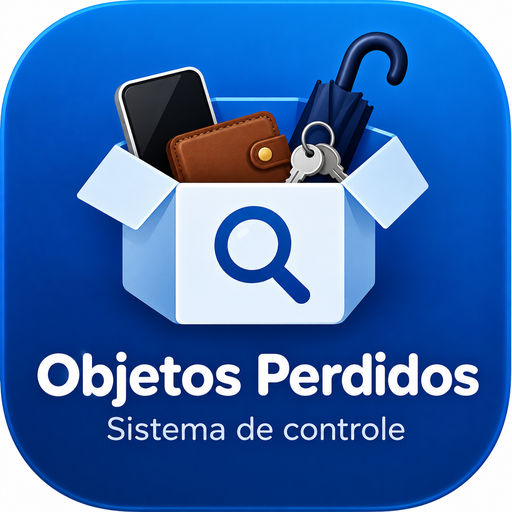

Instalar Objetos Perdidos
Sistema de controle de objetos perdidos da Academia da Fé
Abrir Objetos Perdidos
iPhone / iPad
1. Abra esta página no Safari.
2. Toque no botão Compartilhar.
3. Escolha Adicionar à Tela de Início.
4. Toque em Adicionar.
1. Abra esta página no Safari.
2. Toque no botão Compartilhar.
3. Escolha Adicionar à Tela de Início.
4. Toque em Adicionar.
Android
Toque em Instalar aplicativo acima. Se o botão não aparecer, abra o menu do Chrome (⋮) e escolha Adicionar à tela inicial ou Instalar app.
Toque em Instalar aplicativo acima. Se o botão não aparecer, abra o menu do Chrome (⋮) e escolha Adicionar à tela inicial ou Instalar app.
Computador
Você pode abrir o sistema pelo botão acima. Em navegadores compatíveis, também poderá aparecer a opção de instalar na barra de endereço.
Você pode abrir o sistema pelo botão acima. Em navegadores compatíveis, também poderá aparecer a opção de instalar na barra de endereço.
Academia da Fé — Objetos Perdidos